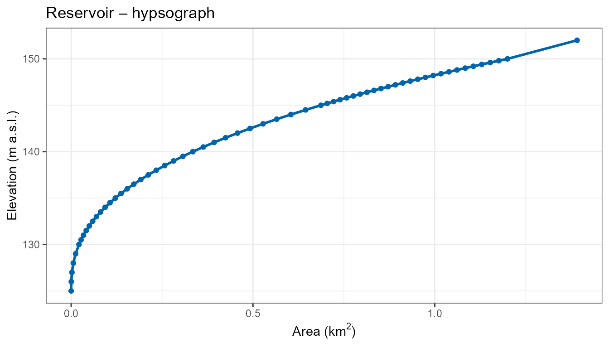
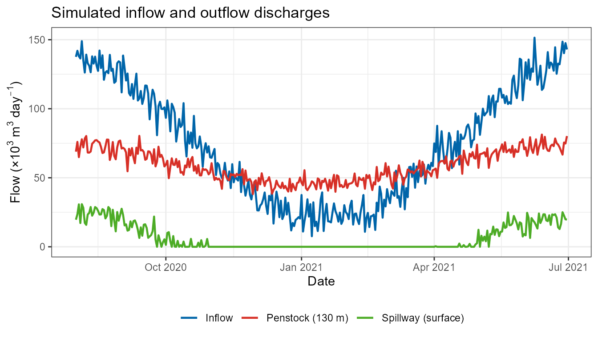
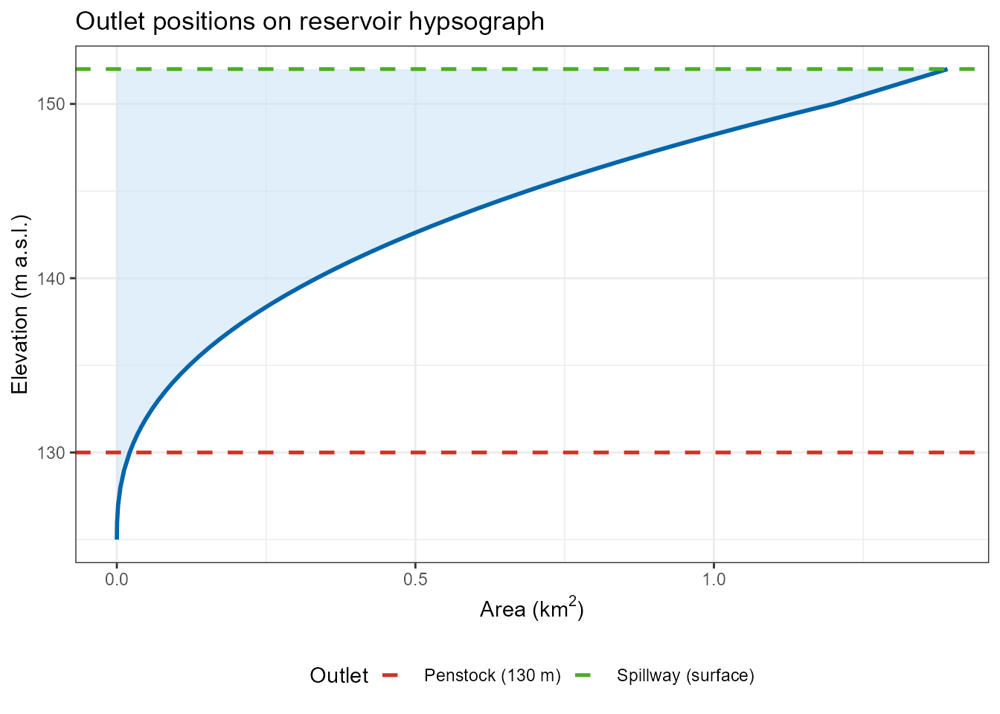
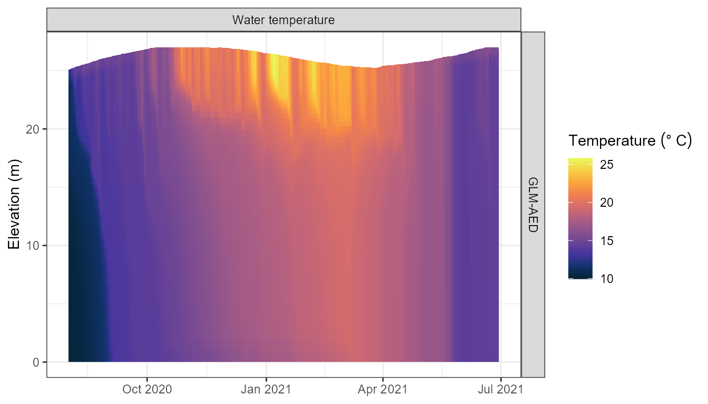

Reservoir Simulation with Multiple Outlets
Source:vignettes/articles/reservoir-aeme.Rmd
reservoir-aeme.RmdIntroduction
Reservoirs differ from natural lakes in several ways that are important for hydrodynamic modelling:
- Regulated water levels – reservoir levels are managed through controlled releases rather than a natural outlet or seepage.
-
Multiple outlets at different depths – a single
reservoir can have:
- A surface spillway that only activates when the reservoir is near full capacity.
- A penstock or bottom outlet for daily operational releases.
- A mid-level selective withdrawal outlet for water quality management (e.g. to avoid releasing cold, anoxic hypolimnetic water).
- Thermal stratification management – withdrawals from different depth layers affect the downstream temperature and water quality.
AEME supports all three major 1-D hydrodynamic models (DYRESM-CAEDYM, GLM-AED, GOTM-WET) with multiple outlets at arbitrary elevations. This vignette walks through setting up a reservoir ensemble model with two outlets at different levels: a regulated penstock at depth and a surface spillway.
Reservoir data
We will use a fictional reservoir, Reservoir, located in the North Island of New Zealand. The reservoir has a full supply level of 150 m above sea level and a maximum depth of 25 m.
lat <- -37.80
lon <- 176.00
elev <- 150 # full supply level (m a.s.l.)
depth <- 25 # maximum depth (m)
area <- 1.2e6 # surface area at full supply level (m²)
reservoir <- list(
name = "Reservoir",
id = "res001",
latitude = lat,
longitude = lon,
elevation = elev,
depth = depth,
area = area
)Simulation period
time <- list(
start = "2020-08-01 00:00:00",
stop = "2021-06-30 00:00:00"
)Meteorological data
Meteorological data bundled with the AEME package (originally from Lake Wainamu, North Island) is reused here to drive the reservoir simulation.
meteo_file <- system.file("extdata/lake/data/meteo.csv", package = "AEME")
met <- read.csv(meteo_file) |>
mutate(Date = as.Date(Date))
head(met[, 1:5])
#> Date MET_tmpair MET_tmpdew MET_wnduvu MET_wnduvv
#> 1 2019-01-01 19.5260 16.9129 3.19505 4.21590
#> 2 2019-01-02 19.5024 15.7136 4.59457 2.62703
#> 3 2019-01-03 20.1359 18.0478 6.17768 3.99858
#> 4 2019-01-04 19.1298 15.2155 2.56012 5.66473
#> 5 2019-01-05 19.1868 15.3679 3.77683 2.75966
#> 6 2019-01-06 20.2102 16.6466 4.83125 3.06035Hypsograph
The hypsograph describes the relationship between elevation and
surface area (and thus volume). Constructed reservoirs typically have a
more prismatic (box-like) shape compared to natural lakes. This is
reflected by a higher volume_development parameter (values
> 1.5 give a convex, cylindrical shape; a value of 3 corresponds to a
perfect cylinder).
hypsograph <- generate_hypsograph(
max_depth = depth,
surface_area = area,
volume_development = 2.5, # more prismatic than a natural lake
elev = elev,
ext_elev = 2 # extend 2 m above full supply level
)
head(hypsograph)
#> elev depth area
#> 1 152.0 2.0 1391324
#> 2 150.0 0.0 1200000
#> 3 149.8 -0.2 1176144
#> 4 149.6 -0.4 1152574
#> 5 149.4 -0.6 1129291
#> 6 149.2 -0.8 1106292
ggplot(hypsograph, aes(x = area / 1e6, y = elev)) +
geom_line(linewidth = 1, colour = "#0065a9") +
geom_point(size = 1.5, colour = "#0065a9") +
labs(
x = expression("Area (km"^2 * ")"),
y = "Elevation (m a.s.l.)",
title = "Reservoir – hypsograph"
) +
theme_bw()
Inflow data
We create a synthetic seasonal inflow time series typical of a New
Zealand catchment, with higher flows in winter (June–August) and lower
flows in summer. The inflow data frame must contain at minimum
Date and HYD_flow (m³ day⁻¹). Temperature
(HYD_temp, °C) and salinity (CHM_salt, PSU)
columns are recommended.
set.seed(42)
sim_dates <- seq(as.Date("2020-01-01"), as.Date("2021-12-31"), by = "day")
doy <- as.integer(format(sim_dates, "%j"))
# Seasonal signal: peak winter flow ~day 200 (NZ Southern Hemisphere winter)
inflow_flow <- pmax(5000,
80000 + 60000 * cos(2 * pi * (doy - 200) / 365) +
rnorm(length(sim_dates), mean = 0, sd = 8000))
# River temperature: coolest in winter, warmest in summer
inflow_temp <- pmax(4, 15 - 8 * cos(2 * pi * (doy - 15) / 365))
inflow_data <- data.frame(
Date = sim_dates,
HYD_flow = inflow_flow,
HYD_temp = inflow_temp,
CHM_salt = 0
)
head(inflow_data[, 1:3])
#> Date HYD_flow HYD_temp
#> 1 2020-01-01 33371.71 7.231200
#> 2 2020-01-02 17605.56 7.199484
#> 3 2020-01-03 24764.44 7.170079
#> 4 2020-01-04 26675.80 7.142995
#> 5 2020-01-05 24617.84 7.118239
#> 6 2020-01-06 20322.85 7.095819Multiple outlet data
The key feature demonstrated in this vignette is the configuration of two outlets at different elevations:
| Outlet | Elevation | Description |
|---|---|---|
| Penstock | 130 m | Regulated bottom release; 20 m below full supply level |
| Spillway | -1 (surface) | Uncontrolled overflow at the water surface |
# Penstock: regulated base flow with small seasonal variation
penstock_flow <- pmax(0,
60000 + 15000 * sin(2 * pi * (doy - 100) / 365) +
rnorm(length(sim_dates), mean = 0, sd = 4000))
# Spillway: only active during the high-inflow winter period
spillway_flow <- pmax(0,
25000 * cos(2 * pi * (doy - 200) / 365) +
rnorm(length(sim_dates), mean = 0, sd = 5000))
penstock_data <- data.frame(
Date = sim_dates,
HYD_flow = penstock_flow
)
spillway_data <- data.frame(
Date = sim_dates,
HYD_flow = spillway_flow
)Visualise the inflow and both outflows over the simulation period:
flows <- bind_rows(
mutate(inflow_data[, c("Date", "HYD_flow")], stream = "Inflow"),
mutate(penstock_data, stream = "Penstock (130 m)"),
mutate(spillway_data, stream = "Spillway (surface)")
) |>
filter(Date >= as.Date("2020-08-01"),
Date <= as.Date("2021-06-30"))
ggplot(flows, aes(x = Date, y = HYD_flow / 1e3, colour = stream)) +
geom_line(linewidth = 0.8) +
scale_colour_manual(
values = c("Inflow" = "#0065a9",
"Penstock (130 m)" = "#d73027",
"Spillway (surface)" = "#4dac26"),
name = NULL
) +
labs(
x = "Date",
y = expression("Flow (×10"^3 * " m"^3 * " day"^{-1} * ")"),
title = "Simulated inflow and outflow discharges"
) +
theme_bw() +
theme(legend.position = "bottom")
The penstock provides a near-constant regulated release throughout the year, while the spillway flows only during the high-flow winter months.
Outlet positions on the hypsograph
It is important that each subsurface outlet elevation falls within the elevation range of the hypsograph. Below we illustrate where the two outlets sit relative to the reservoir hypsograph.
outlet_lines <- data.frame(
elev = c(130, max(hypsograph$elev)),
label = c("Penstock (130 m)", "Spillway (surface)")
)
ggplot(hypsograph, aes(x = area / 1e6, y = elev)) +
geom_ribbon(aes(xmin = 0, xmax = area / 1e6), fill = "#cce5f7", alpha = 0.6) +
geom_line(linewidth = 1, colour = "#0065a9") +
geom_hline(data = outlet_lines,
aes(yintercept = elev, colour = label),
linetype = "dashed", linewidth = 0.9) +
scale_colour_manual(
values = c("Penstock (130 m)" = "#d73027",
"Spillway (surface)" = "#4dac26"),
name = "Outlet"
) +
labs(
x = expression("Area (km"^2 * ")"),
y = "Elevation (m a.s.l.)",
title = "Outlet positions on reservoir hypsograph"
) +
theme_bw() +
theme(legend.position = "bottom")
Build the AEME object
We assemble the AEME object with aeme_constructor(). The
input list must include at minimum the hypsograph,
meteorological data, and light extinction coefficient
(Kw).
input <- list(
init_depth = depth,
hypsograph = hypsograph,
meteo = met,
use_lw = TRUE,
Kw = 0.5 # light extinction coefficient (m⁻¹)
)
aeme <- aeme_constructor(
lake = reservoir,
time = time,
input = input
)
#> ℹ `time$start` is a <character>; converting to <POSIXct> (UTC).
#> ℹ `time$stop` is a <character>; converting to <POSIXct> (UTC).
#> ! `time$time_step` is missing.
#> ℹ Defaulting to 3600 seconds (1 hour).
#> ! `time$spin_up` is missing.
#> ℹ Defaulting to 2 days spin-up for all models.
aeme
#>
#> ── AEME ────────────────────────────────────────────────────────────────────────
#>
#> ── Lake ──
#>
#> Reservoir (ID: res001)
#> • Lat: -37.8; Lon: 176
#> • Elev: 150m; Depth: 25m; Area: 1200000 m2
#>
#> ── Time ──
#>
#> • Start: 2020-08-01; Stop: 2021-06-30; Time step: 3600
#> • Spin up (days): GLM: 2; GOTM: 2; DYRESM: 2; Simstrat: 2
#>
#> ── Configuration ──
#>
#> • Model: glm_aed
#> • Path: D:/a/AEME/AEME/vignettes/articles
#> • Model controls: Present
#> • Use biogeochemical model: No
#> ┌ Model Configuration ─────────────────────────────────────────┐
#> │ Model Physical Biogeochemical │
#> │ --- │
#> │ DY-CD Absent Absent │
#> │ GLM-AED Absent Absent │
#> │ GOTM-WET Absent Absent │
#> │ SIMSTRAT-AED2 Absent Absent │
#> └──────────────────────────────────────────────────────────────┘
#>
#> ── Observations ──
#>
#> • Lake: Absent; Level: Absent
#>
#> ── Input ──
#>
#> • Initial profile: Absent; Initial depth: 25m
#> • Hypsograph: Present (n=62)
#> • Meteo: Present; Use longwave: TRUE; Kw: 0.5
#>
#> ── Inflows ──
#>
#> • Number of inflows: 0; Names: None
#> • Scaling factors: DY-CD: 1; GLM-AED: 1; GOTM-WET: 1; Simstrat-AED2: 1
#>
#> ── Outflows ──
#>
#> • Number of outflows: 0; Names: None; Elevations: N/A
#> • Scaling factors: DY-CD: 1; GLM-AED: 1; GOTM-WET: 1; Simstrat-AED2: 1
#>
#> ── Water Balance ──
#>
#> • Method: 2; Use: obs
#> • Modelled: Absent; Water balance: Absent
#>
#> ── Parameters ──
#>
#> • Number of parameters: 0
#>
#> ── Output ──
#>
#> • DY-CD: 0
#> • GLM-AED: 0
#> • GOTM-WET: 0
#> • SIMSTRAT-AED2: 0
#> • Variables: 0
#> NoneAdd inflows
Inflows are added as a named list of data frames. The name (here
"river") is used as the stream identifier in each
model.
aeme <- add_inflows(aeme, data = list(river = inflow_data))Add multiple outflows
The add_outflows() function accepts:
-
data– a named list of outflow data frames (each with at leastDateandHYD_flowcolumns). -
elevation– a named list matching the names indata.
Useelevation = -1for a surface outlet; supply the elevation in metres above sea level (within the hypsograph range) for a subsurface outlet.
aeme <- add_outflows(
aeme,
data = list(
penstock = penstock_data,
spillway = spillway_data
),
elevation = list(
penstock = 130, # 20 m below the full supply level
spillway = -1 # surface outlet (overflow)
)
)
# Inspect the outflows slot
outf <- outflows(aeme)
cat("Outflow names :", paste(names(outf$data), collapse = ", "), "\n")
#> Outflow names : penstock, spillway
cat("Elevations :",
paste(names(outf$elevation),
unlist(outf$elevation), sep = " = ", collapse = "; "), "\n")
#> Elevations : penstock = 130; spillway = -1Printing the aeme object now shows both outlets
registered in the outflows slot:
aeme
#>
#> ── AEME ────────────────────────────────────────────────────────────────────────
#>
#> ── Lake ──
#>
#> Reservoir (ID: res001)
#> • Lat: -37.8; Lon: 176
#> • Elev: 150m; Depth: 25m; Area: 1200000 m2
#>
#> ── Time ──
#>
#> • Start: 2020-08-01; Stop: 2021-06-30; Time step: 3600
#> • Spin up (days): GLM: 2; GOTM: 2; DYRESM: 2; Simstrat: 2
#>
#> ── Configuration ──
#>
#> • Model: glm_aed
#> • Path: D:/a/AEME/AEME/vignettes/articles
#> • Model controls: Present
#> • Use biogeochemical model: No
#> ┌ Model Configuration ─────────────────────────────────────────┐
#> │ Model Physical Biogeochemical │
#> │ --- │
#> │ DY-CD Absent Absent │
#> │ GLM-AED Absent Absent │
#> │ GOTM-WET Absent Absent │
#> │ SIMSTRAT-AED2 Absent Absent │
#> └──────────────────────────────────────────────────────────────┘
#>
#> ── Observations ──
#>
#> • Lake: Absent; Level: Absent
#>
#> ── Input ──
#>
#> • Initial profile: Absent; Initial depth: 25m
#> • Hypsograph: Present (n=62)
#> • Meteo: Present; Use longwave: TRUE; Kw: 0.5
#>
#> ── Inflows ──
#>
#> • Number of inflows: 1; Names: river
#> • Scaling factors: DY-CD: 1; GLM-AED: 1; GOTM-WET: 1; Simstrat-AED2: 1
#>
#> ── Outflows ──
#>
#> • Number of outflows: 2; Names: penstock, spillway; Elevations: 130, -1
#> • Scaling factors: DY-CD: 1; GLM-AED: 1; GOTM-WET: 1; Simstrat-AED2: 1
#>
#> ── Water Balance ──
#>
#> • Method: 2; Use: obs
#> • Modelled: Absent; Water balance: Absent
#>
#> ── Parameters ──
#>
#> • Number of parameters: 0
#>
#> ── Output ──
#>
#> • DY-CD: 0
#> • GLM-AED: 0
#> • GOTM-WET: 0
#> • SIMSTRAT-AED2: 0
#> • Variables: 0
#> NoneBuild model configurations
build_aeme() translates the AEME object into the
configuration files required by each model. Each model handles multiple
outlets in its own way:
-
GLM-AED: creates individual CSV boundary condition
files (
bcs/outflow_<name>.csv) and setsnum_outlet,outl_elvs, andoutlet_typeinglm3.nml. -
GOTM-WET: creates individual data files
(
inputs/outf_<name>.dat) and updatesgotm.yaml. -
DYRESM-CAEDYM: writes all outlets into a single
.wdrfile with a column per outlet and the number of outlets in the header.
model_controls <- get_model_controls()
model <- c("glm_aed")
path <- file.path(tempdir(), "reservoir")
aeme <- build_aeme(
aeme = aeme,
model = model,
model_controls = model_controls,
path = path,
ext_elev = 2,
use_bgc = FALSE,
wb_method = 1
)
#> ✔ Created missing directory:
#> C:\Users\RUNNER~1\AppData\Local\Temp\RtmpGgGi6k\reservoir
#>
#>
#> ── Calculating water balance ──
#>
#>
#>
#> Resolving water level
#>
#> ℹ No water level present. Using constant water level.
#> ℹ Estimating surface water temperature
#>
#> ✔ Estimating surface water temperature [9ms]
#>
#>
#>
#> ℹ Insufficient lake temperature observations (<10).
#> ℹ Using Stefan & Preud'homme (2007) method to estimate surface temperature.
#> ℹ No water balance correction applied (method = 1).
#>
#>
#> ── Building GLM-AED for lake reservoir ──
#>
#>
#>
#> ℹ Copied in GLM nml file
#> ℹ Copied in AED nml file and supporting files
#> ℹ Copied in GLM plots nml file
#> ✔ GLM nml validation completed - no issues detected.Run the models
aeme <- run_aeme(aeme = aeme, model = model, path = path)
#> ℹ Running models... (Have you tried parallelizing?) [2026-07-30 02:39:27]
#> → GLM-AED running... [2026-07-30 02:39:27]
#> ✔ GLM-AED run successful! [2026-07-30 02:39:27]
#> ✔ Model run complete! [2026-07-30 02:39:27]View the output
plot_output(aeme = aeme)
#> Warning: Removed 124 rows containing missing values or values outside the scale range
#> (`geom_col()`).
Summary
This vignette has shown how to configure AEME for a reservoir with multiple outlets at different elevations. The key steps are:
-
Define the reservoir geometry using a more
prismatic hypsograph (
volume_development> 1.5) appropriate for a constructed reservoir. - Create time series for each inflow and each outlet independently.
-
Register multiple outlets with
add_outflows(), providing a nameddatalist and a matching namedelevationlist. Useelevation = -1for a surface outlet; provide the actual elevation (m a.s.l.) for subsurface outlets, ensuring values fall within the hypsograph elevation range. -
Build and run the model ensemble with
build_aeme()andrun_aeme().
Currently only one of the three hydrodynamic models, GLM-AED, supported by AEME (DYRESM-CAEDYM, GLM-AED, and GOTM-WET) can handle multiple outlets and produce separate outlet files during the build step, allowing each outlet’s contribution to be tracked independently.